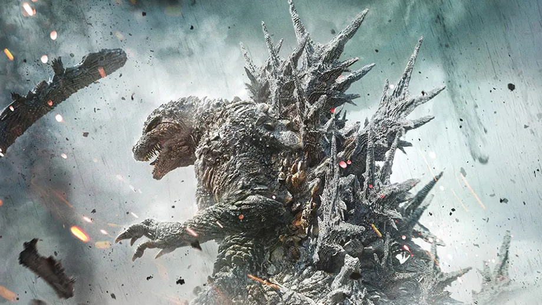
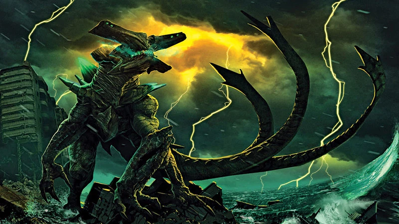

Kaiju Info.com
This Website is about Kaiju and learning about them in general

Wikizilla Godzilla
Godzilla
This is about Godzilla and what he is and what he represents.
Websites for Info:
GojipediaWikizilla Godzilla

Wikizilla Gamera
Pacific Rim
Pacific Rim/Others
These are the Kaiju that are not involved with the Godzilla franchise.
Websites for Info:
Wikizilla Other KaijuWikizilla Gamera
Pacific Rim